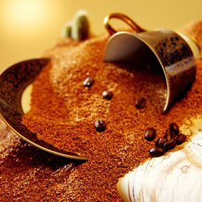
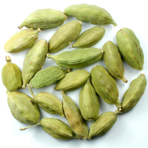
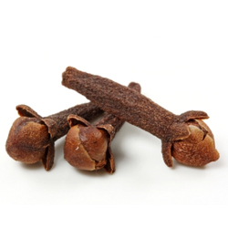
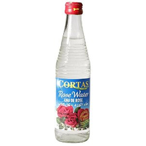

| Home | History | How to make | Social aspect | What makes Arabic coffee unique! |
|---|

Here are the ingredients that are necessary:
* Arabic coffee (Arabica beans lightly roasted and lighter in color).
* Cardomom (ground).
* 3 cloves
*Saffron(A pinch of Saffron).
*Rose Water (optional)
Here is how you prepare Arabic Coffee:
1) Fill a coffee pot with water and let it heat for a minute.
2) Put in the ground cardmom, 3 cloves and a pinch of saffron and let it heat for 2 to 3 minutes.
3) Add the ground Arabic coffee to the pot and let it boil for 4 minutes.
4) Take it off the stove and let it sit for 5 minutes to cool down. Then it is ready to serve.